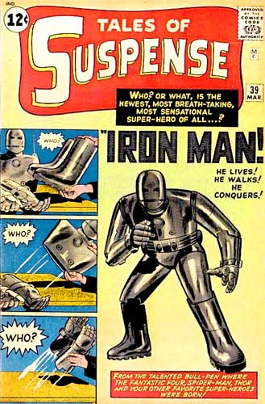
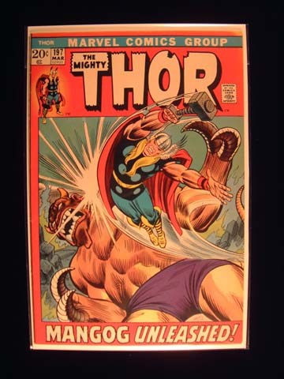
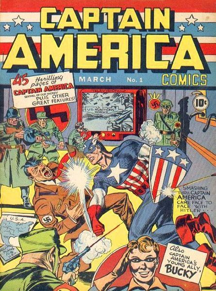
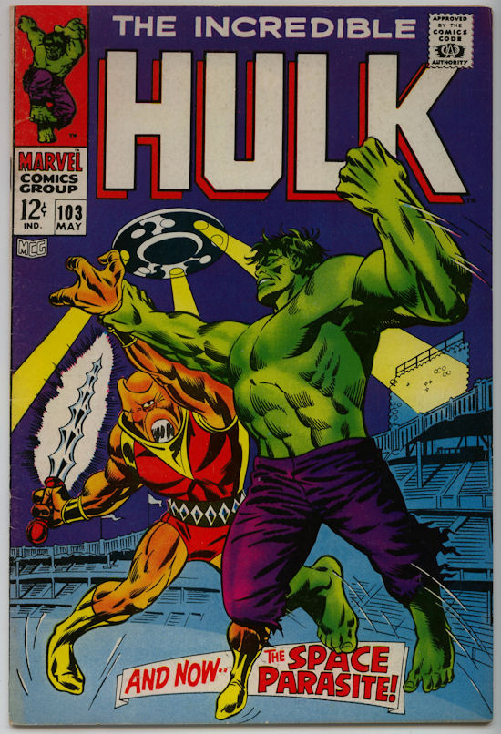
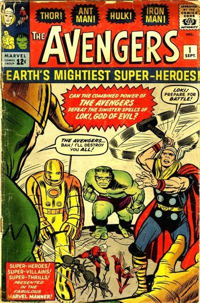
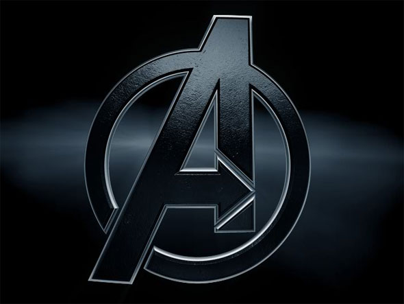

Iron Man is an American fictional character, a superhero who appears in comic books published by Marvel Comics. The character was created by writer-editor Stan Lee, developed by scripter Larry Lieber, and designed by artists Don Heck and Jack Kirby. He made his first appearance in Tales of Suspense #39 (March 1963).
An American billionaire playboy, industrialist and ingenious engineer, Tony Stark suffers a severe chest injury during a kidnapping in which his captors attempt to force him to build a weapon of mass destruction. He instead creates a powered suit of armor to save his life and escape captivity. He later uses the suit and successive versions to protect the world as Iron Man. Through his corporation ? Stark Industries ? Tony has created many military weapons, some of which, along with other technological devices of his making, have been integrated into his suit, helping him fight crime. Initially, Iron Man was a vehicle for Stan Lee to explore Cold War themes, particularly the role of American technology and business in the fight against communism. Subsequent re-imaginings of Iron Man have transitioned from Cold War themes to contemporary concerns, such as corporate crime and terrorism.
Throughout most of the character's publication history, Iron Man has been a member of the superhero team the Avengers and has been featured in several incarnations of his own various comic book series. Iron Man has been adapted for several animated TV shows and films. The character is portrayed by Robert Downey, Jr. in the live action film Iron Man (2008), which was a critical and box office success. Downey, who received much acclaim for his performance, reprised the role in several Marvel Cinematic Universe films, including two Iron Man sequels and The Avengers (2012). Iron Man was ranked 12th on IGN's Top 100 Comic Book Heroes in 2011.

Thor is a fictional character, a superhero that appears in comic books published by Marvel Comics. The character first appeared in Journey into Mystery #83 (Aug. 1962) and was created by editor-plotter Stan Lee, scripter Larry Lieber, and penciller Jack Kirby.
Debuting in the Silver Age of Comic Books, the character is based on the god Thor of Norse mythology. He has starred in several ongoing series and limited series, and is a founding member of the superhero team the Avengers, appearing in each volume of that series. The character has also appeared in associated Marvel merchandise including animated television series, clothing, toys, trading cards, video games, and movies.
The 2011 film Thor, based on the character and comic, was directed by Kenneth Branagh and starred Chris Hemsworth as Thor. Hemsworth reappears as Thor in The Avengers and Thor: The Dark World as a part of the Marvel Cinematic Universe franchise. Thor placed 14th on IGN's Top 100 Comic Book Heroes of All Time in 2011.

Captain America is an American fictional character, a superhero who appears in comic books published by Marvel Comics. The character first appeared in Captain America Comics #1 (cover-dated March 1941),[1][2][3][4][5] from Marvel Comics' 1940s predecessor, Timely Comics, and was created by Joe Simon and Jack Kirby. As of 2007, an estimated 210 million copies of "Captain America" comic books had been sold in 75 countries.[6] For nearly all of the character's publication history, Captain America has been the alter ego of Steve Rogers, a frail young man who was enhanced to the peak of human perfection by an experimental serum, in order to aid the United States government's efforts to win World War II. Captain America wears a costume that bears an American flag motif, and is armed with an indestructible, boomerang-like shield that can both be thrown as a weapon and used to defend against others' weapons.[7]
An intentionally patriotic creation who was often depicted fighting the Axis powers of World War II, Captain America was Timely Comics' most popular character during the 1940s wartime period. After the war ended, the character's popularity waned and the comic had been discontinued by 1950 aside from an ill-fated 1953 revival. Captain America was re-introduced by Marvel Comics during the Silver Age of comics, as an M.I.A soldier retrieved from an iceberg and awakened from suspended animation by the superhero team the Avengers in The Avengers #4 (March 1964). Since then, Captain America has often led the team, as well as starring in his own series.
Steve Rogers was purportedly assassinated in Captain America vol. 5, #25 (March 2007), although he was later revealed to be alive. The comic-book series Captain America continued to be published,[8] with Rogers' former sidekick, James "Bucky" Barnes, having taken up the mantle until Rogers eventually again assumed the role.
Captain America was the first Marvel Comics character adapted into another medium, with the release of the 1944 movie serial Captain America. Since then, the character has been featured in several other films and television series, including Chris Evans' portrayal in Captain America: The First Avenger, released on July 22, 2011, and The Avengers, released on May 4, 2012. In 2011, Captain America was ranked sixth on IGN's Top 100 Comic Book Heroes.

The Hulk is a fictional character, a comic book superhero appearing in publications by Marvel Comics. The character was created by Stan Lee and Jack Kirby, and first appeared in The Incredible Hulk #1 (May 1962). Throughout his comic book appearances, the Hulk is portrayed as a large green humanoid that possesses near limitless superhuman strength and great invulnerability, attributes that grow more potent the angrier he becomes. Hulk is the alter ego of Bruce Banner, a socially withdrawn and emotionally reserved physicist who physically transforms into the Hulk under emotional stress and other specific circumstances at will or against it; these involuntary transformations lead to many complications in Banner's life. When transformed, the Hulk often acts as a disassociated separate personality that hates Banner. Over the decades of Hulk stories, the Hulk has been represented with several different personalities based on Hulk and Banner's fractured psyche, ranging from mindless savage to brilliant warrior, and Banner has taken control of the Hulk's form on occasion. Banner first transforms into the Hulk after being caught in the blast of the gamma bomb he invented while saving Rick Jones, a youth who had wandered onto the testing range.
Lee said that the Hulk's creation was inspired by a combination of Frankenstein and Dr. Jekyll and Mr. Hyde.[1] Although the Hulk's coloration has varied throughout the character's publication history, the most consistent shade is green. As a child, Banner's father Brian Banner often got mad and physically abused his mother, creating the psychological complex of fear, anger, and the fear of anger and the destruction it can cause that underlies the character. A common storyline is the pursuit of both Banner and the Hulk by the U.S. armed forces, because of all the destruction that he causes. He has two main catchphrases: "Hulk is strongest one there is!" and the better-known "HULK SMASH!", which has founded the basis for a number of pop culture memes.
The Hulk has been depicted in various other media, most notably with Bill Bixby (as Dr. David Banner, and Lou Ferrigno as the Hulk) in a live-action, 1970s/1980s television series. In major film adaptations (which integrate various CGI versions of the creature), Eric Bana, Edward Norton, and Mark Ruffalo have each played Bruce Banner. Other depictions include multiple animated series; the character has also been used in highly-profitable merchandising for generations (e.g., video games, toys, clothing). In 2011 Hulk placed 9th on IGN's Top 100 Comic Book Heroes.

The Avengers is a team of superheroes, appearing in comic books published by Marvel Comics. The team made its debut in The Avengers #1 (Sept. 1963), created by writer-editor Stan Lee and artist/co-plotter Jack Kirby, following the trend of super-hero teams after the success of DC Comics' Justice League of America.[1]
Labeled Earth's Mightiest Heroes, the Avengers originally consisted of Iron Man, Ant-Man, the Wasp, Thor, and the Hulk. The original Captain America was discovered, trapped in ice (issue #4), and joined the group after they revived him. A rotating roster became a hallmark, although one theme remained consistent: the Avengers fight "the foes no single superhero can withstand." The team, famous for its battle cry of "Avengers Assemble!", has featured humans, mutants, robots, aliens, supernatural beings, and even former villains.
The 2012 live-action feature film Marvel's The Avengers, directed by Joss Whedon, set numerous records during its box office run, including the biggest opening debut in North America, with a weekend gross of $207.4 million.[2] A second Avengers film titled The Avengers: Age of Ultron is set for release on May 1, 2015.
